Tema 3.B.7
La política comercial (I). Instrumentos y efectos. Barreras arancelarias y no arancelarias. Otros instrumentos tradicionales.
Arancel en un país pequeño y grande, arancel óptimo, paradojas de Metzler y Lerner, cuotas, subvenciones e impuestos a la exportación y medidas no arancelarias.
Exclusivo Material exclusivo de victorgutierrezmarcos.es y la app Oposición TCEE · DCE. Puedes usarlo libremente para tu estudio personal. No se autoriza su incorporación a otras plataformas, aplicaciones o servicios. Condiciones de uso.
Introducción
Enganche:
«No se le pueden poner puertas al campo», dice el refrán. En 2025, Estados Unidos lo intentó: el 2 de abril anunció aranceles «recíprocos» sobre casi todos sus socios, y en febrero de 2026 su Tribunal Supremo resolvió que la ley de emergencia económica con la que los impuso no le autoriza a fijar aranceles. Por el camino, la parte del comercio mundial que se hace en condiciones de nación más favorecida (NMF) bajó del 80 % a principios de 2025 al 72 % en febrero de 2026.
Junto a los aranceles, al comercio lo frenan reglamentos técnicos, controles sanitarios, licencias, cuotas o normas de origen, que la UNCTAD clasifica en 16 capítulos.
¿Qué consigue un país cuando le pone puertas a su comercio, y quién las paga?
Relevancia:
Teórica: es la parte normativa de la teoría del comercio. Con competencia perfecta, el libre comercio es eficiente para el mundo y, salvo para un país grande, también para cada país. La teoría de la política comercial explica por qué, cuánto cuesta apartarse de él y quién gana y quién pierde cuando se hace.
Práctica: el comercio mundial de bienes y servicios alcanzó 34,65 billones de dólares en 2025, y cada instrumento que lo encarece se paga en precios, empleo y eficiencia. Para España, la política comercial es competencia exclusiva de la Unión Europea [ver tema 3.B.41], pero sus efectos los notan sus empresas y sus consumidores.
Contextualización:
La política comercial es el conjunto de medidas con que un gobierno actúa sobre el volumen, la composición, los precios o la dirección de su comercio exterior.
Objetivos:
proteger a los productores nacionales, por motivos de empleo, de reparto o de seguridad, o a una industria naciente, el viejo argumento de Hamilton (1791) y List (1841) [ver tema 3.B.8];
recaudar;
mejorar la relación real de intercambio (RRI) de un país grande;
corregir fallos de mercado.
En la práctica la mueve también la economía política: los grupos que ganan con la protección están concentrados y organizados, y los que pierden, dispersos.
Clasificación de los instrumentos:
por la variable que fijan: de precio (aranceles, subvenciones e impuestos a la exportación) o de cantidad (cuotas, restricciones voluntarias);
por el sentido: defensivos (frenan las importaciones) u ofensivos (fomentan las exportaciones);
por la forma: arancelarios, no arancelarios y otros instrumentos, que es el orden de esta exposición.
La teoría del comercio explica por qué se comercia y con qué ganancias: por diferencias de tecnología y de dotaciones con competencia perfecta [ver tema 3.B.5], y por rendimientos crecientes y diferenciación con competencia imperfecta [ver tema 3.B.6]. En los 2 casos, el libre comercio aumenta el bienestar agregado, pero no el de todos: hay ganadores y perdedores [ver tema 3.B.5].
Historia: los mercantilistas defendían la protección, y Hume (1752) y Ricardo (1817) la rebatieron. En el siglo XX, las rondas del GATT, desde su firma en 1947 hasta la Ronda Uruguay (1986-1994), bajaron los aranceles, pero desde los años 70 crecieron las barreras no arancelarias (el «neoproteccionismo»), y desde 2018 los aranceles han vuelto.
Esta exposición estudia los instrumentos y sus efectos con competencia perfecta y, como extensión, con un monopolio nacional. La completan la política comercial estratégica con oligopolio [ver tema 3.B.8], los efectos sobre el crecimiento [ver tema 3.B.9], la eliminación discriminatoria de barreras [ver tema 3.B.10] y las reglas multilaterales [ver tema 3.B.33].
Problemática (preguntas clave):
¿Qué efectos tiene un arancel sobre los precios, el comercio, el bienestar y su reparto, y depende de que el país sea pequeño o grande?
¿Puede un país ganar con un arancel? ¿Cuál es el arancel óptimo?
¿Son equivalentes un arancel y una cuota, y qué cambia con los demás instrumentos?
¿Cómo se mide la protección y qué dicen los datos de sus efectos?
Estructura:
La exposición va del instrumento clásico, el arancel, a los que lo sustituyeron, y termina en la medición.
I. Barreras arancelarias (I): el arancel y sus efectos en equilibrio parcial y general, en un país pequeño y en uno grande, con el arancel óptimo y sus paradojas.
II. Barreras no arancelarias y otros instrumentos tradicionales (II): cuotas, subvenciones e impuestos a la exportación, restricciones voluntarias, medidas técnicas y el resto de instrumentos, comparados con el arancel.
III. Medición de los efectos (III): cómo se mide la protección y qué dice la evidencia.
3.B.7. La política comercial (I). Instrumentos y efectos. Barreras arancelarias y no arancelarias. Otros instrumentos tradicionales
Introducción2′30″
I. Instrumentos de política comercial (I): barreras arancelarias13′
1. Definición
2. Efectos: equilibrio parcial y general, país pequeño y grande, arancel óptimo, paradojas de Metzler y Lerner
II. Instrumentos de política comercial (II): barreras no arancelarias10′
1. Cuotas a la importación
2. Subsidios a la exportación
3. Impuestos a la exportación
4. Restricciones voluntarias de exportaciones
5. Otros instrumentos tradicionales
III. Medición de los efectos de los instrumentos3′30″
1. Medición del proteccionismo
2. Evidencia empírica de la integración comercial
Conclusión1′
Reparto del cante: introducción, 2′30″; I, 13′ (I.1, 1′; I.2, 12′: parcial, 4′30″; general, 7′30″, de ellos el arancel óptimo, 3′30″); II, 10′ (apertura, 1′; II.1, 3′; II.2, 2′; II.3, 1′; II.4, 1′; II.5, 2′); III, 3′30″ (III.1, 2′; III.2, 1′30″), y conclusión, 1′. Los gráficos imprescindibles son el arancel en un país pequeño y en uno grande en equilibrio parcial (gráficos 2 y 3), el arancel óptimo con curvas de oferta neta (gráfico 9) y la cuota con monopolio nacional (gráfico 15). La función clave, \(t^{\mathrm{opt}}=1/(\varepsilon^*-1)\), acompaña todo el tema hasta la conclusión, igual que las cifras del ejemplo del acero (\(x=100-p\), \(q=p\), \(p^W=20\)), que vuelven en las cuotas, el monopolio y las restricciones voluntarias. Los refranes: el del enganche, «no se le pueden poner puertas al campo», y los dichos «el pez grande se come al chico» (el arancel óptimo), «salirle a uno el tiro por la culata» (Lerner), «tanto monta, monta tanto» (la simetría), «hacer de la necesidad virtud» (las restricciones voluntarias) y «desnudar a un santo para vestir a otro» (la protección efectiva). La guerra arancelaria de Johnson va en el cuerpo, en 3 pasos (gráficos 10, 11 y 12); las derivaciones y la construcción de las curvas de oferta neta están en los anexos; lo que va en cajas grises y en notas es para las preguntas del tribunal.
Notación. \(A\) es el país que pone la medida y \(B\), el resto del mundo; en equilibrio general, \(A\) exporta el bien \(X\) e importa el \(Y\), y \(\mathrm{RRI}\equiv p_X/p_Y\). En equilibrio parcial, \(p^W\) es el precio mundial de libre comercio y \(p^*\), el que recibe el exportador extranjero cuando el país es grande (el asterisco marca siempre al extranjero); \(q\) es la producción nacional, \(x\) el consumo y \(M=x-q\) las importaciones, con superíndice 0 en el libre comercio y 1 con la medida; \(\varepsilon_{q,p}>0\) y \(\varepsilon_{x,p}<0\) son las elasticidades de la oferta y la demanda nacionales. \(t\) es un arancel ad valorem (no por unidad, como el \(t_A\) de la política comercial estratégica [ver tema 3.B.8]), \(s\) una subvención ad valorem a la exportación y \(\bar M\) una cuota. Las áreas de bienestar son \(a\) (excedente del productor), \(b\) y \(d\) (distorsiones en la producción y en el consumo), \(c\) (recaudación o renta de la cuota) y \(e\) (mejora de la RRI); \(f\) y \(h\), las distorsiones del exportador extranjero. ON es una curva de oferta neta, CIC una curva de indiferencia comercial, FPP la frontera de posibilidades de producción y CIS una curva de indiferencia social; \(E^A\) y \(M^A\) son las exportaciones de \(X\) y las importaciones de \(Y\) de \(A\). \(\varepsilon^*\equiv\varepsilon^B_M\) es la elasticidad de la ON del resto del mundo (su demanda de importaciones), \(\varepsilon^*_X=\varepsilon^*-1\) la de su oferta de exportaciones, \(\mathrm{RMT}^*_{XY}\) la relación marginal de transformación a través del comercio (la pendiente de ON\(_B\)) y \(\mathrm{PMgC}^A_Y\) la propensión marginal de \(A\) a gastar en \(Y\). \(\mathcal{L}\) es el índice de Lerner.
I. Instrumentos de política comercial (I): barreras arancelarias
En el cante (13′): la definición y los tipos, de palabra y con la lista (1′). El equilibrio parcial (4′30″): el país pequeño con el gráfico de los excedentes, las áreas \(a\)-\(d\), la fórmula de la pérdida y el ejemplo del acero (2′30″); el país grande con los 2 mercados, el área \(e\), el bienestar ambiguo y \(t^{\mathrm{opt}}=1/\varepsilon^*_X\) (2′). El equilibrio general (7′30″): la herramienta, dibujando ON\(_A\) y ON\(_B\) una sola vez (1′); el país pequeño sobre el mismo gráfico, con ON\(_B\) recta (1′30″); el arancel óptimo con el gráfico de referencia y la función clave, la evidencia y las represalias en una frase cada una (3′30″), y Metzler y Lerner con el gráfico de 3 paneles pequeños (1′30″). El plano de bienes del país pequeño y el gráfico de los aranceles medios van como apoyo.
Empezamos por el instrumento más antiguo y el más estudiado. Conclusión anticipada: en un país pequeño, un arancel siempre reduce el bienestar, aunque reparte rentas hacia los productores y el Estado; en uno grande puede aumentarlo, porque mejora su RRI a costa del resto del mundo, y hay un arancel óptimo, positivo y tanto menor cuanto más elástica es la oferta extranjera.
El análisis va de lo sencillo a lo completo: primero el mercado del bien protegido (equilibrio parcial) y después toda la economía (equilibrio general), y en cada caso, primero un país pequeño, precio-aceptante en los mercados mundiales, y después uno grande.
I.1. Definición
Un arancel a la importación es un impuesto sobre una mercancía importada cuando cruza la frontera.1 Se distinguen varios tipos:
Según cómo se calcula:
Arancel ad valorem: un porcentaje \(t\) del valor en aduana, de modo que el precio interior es \(p=p^W(1+t)\). Por ejemplo, la Unión Europea aplica de media un 10,3 % a los productos agrícolas importados.
Ventaja: da la misma protección aunque cambie el nivel general de precios, y no discrimina entre variedades caras y baratas.
Inconveniente: es más difícil de administrar, porque hay que valorar la mercancía, lo que da pie a infravalorarla en la factura; por eso existe el Acuerdo sobre Valoración en Aduana [ver tema 3.B.33].
Arancel específico: una cantidad fija por unidad física importada, \(T\) euros por tonelada o por unidad. Por ejemplo, el azúcar blanco paga en la Unión una cantidad fija por cada 100 kilos.
Ventaja: es más sencillo de administrar.
Inconvenientes: su equivalente ad valorem, \(T/p^W\), sube cuando bajan los precios mundiales y se erosiona con la inflación, y pesa más sobre las variedades baratas, de modo que es regresivo dentro de cada partida.
Compuesto (un porcentaje más una cantidad fija) y mixto (el mayor o el menor de los 2). Son frecuentes en los productos agrícolas: en la Unión, casi un tercio de las líneas arancelarias agrícolas (el 31,3 %) no son ad valorem.
Según cuándo o cuánto se aplica:
estacional: distinto según la época del año, como en frutas y hortalizas;
contingente arancelario: un arancel bajo para las importaciones dentro de un cupo y otro más alto para las que lo superan. Es el resultado de la «arancelización» de las cuotas agrícolas en la Ronda Uruguay, combina un instrumento de precio y uno de cantidad (II.1) y afecta al 13,5 % de las líneas agrícolas de la Unión.
Según el compromiso internacional:
el arancel consolidado es el máximo que un miembro de la OMC se compromete a no superar, y el aplicado, el que cobra. La diferencia, el «agua» arancelaria, le deja margen para subirlo sin incumplir: India tiene un arancel consolidado medio del 50,8 % y aplica el 16,0 %;
el arancel de nación más favorecida (NMF) es el que se aplica por igual a todos los miembros (artículo I del GATT). Las excepciones son los acuerdos preferenciales [ver tema 3.B.10] y las preferencias a los países en desarrollo [ver tema 3.B.33].
Estructura: los aranceles suelen ser más altos cuanto más elaborado es el producto (escalonamiento arancelario). Así protegen más de lo que parece a las industrias que transforman, algo que mide la protección efectiva (III.1).
Nivel: entre 1996 y 2024, el arancel NMF aplicado medio de los miembros de la OMC bajó del 13,1 % al 8,9 % en media simple y del 7,0 % al 3,9 % ponderado por el comercio; con las preferencias, el arancel efectivo ponderado es del 2,2 % (gráfico 1). La media simple supera a la ponderada porque los aranceles altos frenan las importaciones y pesan poco en la media ponderada. Son datos de antes de la guerra arancelaria de 2025: con ella, el arancel efectivo de Estados Unidos pasó del 2,4 % en 2024 al 7,6 % en 2025, y por socios llegó al 30,6 % con China (gráfico 22, en el anexo E).
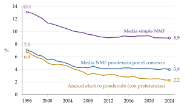
I.2. Efectos
Estudiamos un arancel ad valorem \(t\) sobre un bien del que el país es importador neto (con uno específico, las conclusiones son las mismas).
Supuestos comunes: competencia perfecta en todos los mercados, bien homogéneo, sin costes de transporte y la recaudación devuelta a los consumidores como una transferencia de suma fija, salvo que se diga otra cosa.
Se distinguen 2 tipos de país:
un país pequeño no altera los precios mundiales con lo que compra y vende;
uno grande, sí.
I.2.1. Equilibrio parcial
País pequeño
Idea: el país compra a un precio mundial dado, \(p^W\). El arancel lo encarece dentro, a \(p^W(1+t)\), y productores y consumidores se ajustan a ese precio (gráfico 2).
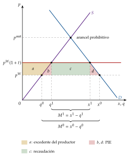
Fuente: elaboración propia a partir de Feenstra y Taylor (2021, cap. 8) y Krugman, Obstfeld y Melitz (2018, cap. 9).
Análisis positivo (cantidades y precios):
el precio interior sube en toda la cuantía del arancel, de \(p^W\) a \(p^W(1+t)\);
el consumo baja, de \(x^0\) a \(x^1\), y la producción nacional sube, de \(q^0\) a \(q^1\);
las importaciones bajan por los 2 lados, de \(M^0=x^0-q^0\) a \(M^1=x^1-q^1\).
Análisis normativo (áreas del gráfico 2):
el excedente del consumidor baja en \(a+b+c+d\): unos pagan más por lo que siguen comprando y otros dejan de comprar;
el excedente del productor sube en \(a\);
la recaudación es \(c=t\,p^WM^1\), las unidades importadas por el arancel de cada una;
el efecto neto es una pérdida irrecuperable de eficiencia (PIE) \(b+d\): \(b\) es la distorsión en la producción (se producen dentro unidades que cuestan más que importarlas) y \(d\), la distorsión en el consumo (se dejan de consumir unidades que valen más de lo que cuesta importarlas) [ver tema 3.A.16].
La PIE es el triángulo de Harberger de un impuesto [ver tema 4.B.8]: \[\tag{1} \mathrm{PIE}=b+d\approx\tfrac12\,t^2\,p^W\left(\varepsilon_{q,p}\,q^0+\lvert\varepsilon_{x,p}\rvert\,x^0\right)=\tfrac12\,t^2\,\lvert\varepsilon_{M,p}\rvert\,p^WM^0,\] con las elasticidades de la oferta, la demanda y las importaciones en el libre comercio. Depende de 2 cosas:
(+) de las elasticidades: cuanto más responden la oferta y la demanda al precio, mayores son las 2 distorsiones;
(++) de la cuantía del arancel, y además con su cuadrado: es mejor poner aranceles bajos en muchos productos que muy altos en unos pocos.
Volvamos a nuestro acero. Un país pequeño tiene una demanda \(x=100-p\) y una oferta nacional \(q=p\), y el precio mundial es \(p^W=20\):
con libre comercio consume 80, produce 20 e importa 60;
un arancel del 50 % sube el precio a 30: el consumo baja a 70, la producción sube a 30 y las importaciones caen a 40;
los consumidores pierden 750, los productores ganan \(a=250\), el Estado recauda \(c=400\) y se pierden \(b+d=50+50=100\), justo lo que da la fórmula, \(\tfrac12\cdot0{,}25\cdot20\cdot(1\cdot20+0{,}25\cdot80)=100\).
Reparto: el arancel redistribuye de los consumidores a los productores y al Estado y, dentro del país, hacia el factor que usa intensivamente el bien protegido (Stolper-Samuelson) [ver tema 3.B.5].
El arancel, descompuesto: equivale a una subvención a la producción y un impuesto sobre el consumo, los 2 al tipo \(t\). Si el objetivo es producir más, una subvención a la producción lo consigue sin la distorsión \(d\): es el principio de focalización, que manda corregir cada distorsión en su origen [ver tema 3.A.22].
¿Por qué se usan, entonces? Porque recaudan con facilidad allí donde otros impuestos son difíciles de cobrar, y por economía política: la ganancia de los productores está concentrada y la pérdida de los consumidores, repartida.
Arancel prohibitivo: si \(p^W(1+t)\) alcanza el precio de autarquía, las importaciones desaparecen y el país consume lo que produce; el arancel deja de recaudar, y subirlo más no cambia nada. En el ejemplo, un arancel del 150 % lleva el precio a 50, el de autarquía.
Conclusión: en un país pequeño, todo arancel reduce el bienestar nacional, y el mundial en la misma cuantía, porque el resto del mundo no nota nada. El arancel óptimo es cero.
País grande
Idea: si el país compra una parte grande del mercado mundial, al importar menos hace bajar el precio mundial, de modo que una parte del arancel la pagan los exportadores extranjeros.
Equilibrio: la demanda de importaciones del país, \(M(p)=x(p)-q(p)\), frente a la oferta de exportaciones del resto del mundo, \(X^*(p^*)\). Con libre comercio se cortan en \(p^W\). Con el arancel, el comprador paga \(p=p^*(1+t)\) y el exportador recibe \(p^*\): la cuña separa los 2 precios, con \(p^*<p^W<p^*(1+t)\) (gráfico 3).
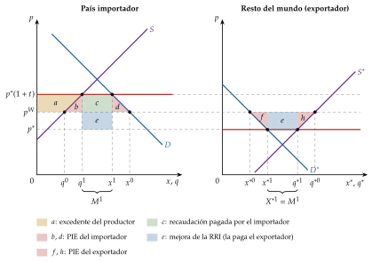
Fuente: elaboración propia a partir de Feenstra y Taylor (2021, cap. 8).
Bienestar del importador:
los consumidores pierden \(a+b+c+d\) y los productores ganan \(a\);
el Estado recauda \(c+e\), donde \(e=(p^W-p^*)M^1\) es la parte del arancel que pagan los extranjeros: la mejora de la RRI;
el efecto neto, \(e-(b+d)\), es ambiguo.
Bienestar del exportador: el precio que recibe baja; sus consumidores ganan, pero sus productores pierden más, y su pérdida neta es \(e+f+h\): el rectángulo \(e\) que transfiere al importador y 2 triángulos de distorsión, \(f\) y \(h\).
Bienestar mundial: \(e-(b+d)-(e+f+h)=-(b+d+f+h)<0\). Lo que gana el país grande, si gana, se lo quita al resto del mundo, y además se pierde eficiencia.
El arancel óptimo: con un arancel pequeño, la ganancia \(e\) es proporcional a \(t\) y la pérdida \(b+d\), a \(t^2\), así que un arancel pequeño siempre mejora el bienestar de un país grande. Si se sube, el bienestar crece hasta un máximo y luego cae: primero sigue por encima del libre comercio, después por debajo, hasta el arancel prohibitivo (gráfico 4). El máximo está en \[\tag{2} t^{\mathrm{opt}}=\frac{1}{\varepsilon^*_X},\] donde \(\varepsilon^*_X\) es la elasticidad de la oferta de exportaciones del resto del mundo (la derivación, en el anexo B). Cuanto más rígida es esa oferta, más paga el extranjero y mayor es el arancel óptimo; si es infinitamente elástica, el país es pequeño y \(t^{\mathrm{opt}}=0\).
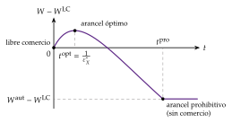
Fuente: elaboración propia a partir de Feenstra y Taylor (2021, cap. 8).
I.2.2. Equilibrio general
El equilibrio parcial da intuiciones sencillas, pero es simplista: supone que el arancel solo afecta al mercado del bien que grava. Sirve para una industria con pocos eslabonamientos, pero en general el arancel tiene efectos en el resto de la economía:
desplaza recursos hacia el bien protegido y los quita de los demás;
cambia las rentas de los factores;
y, como el país tiene que pagar lo que importa, reduce también sus exportaciones: un arancel a la importación es, a la vez, un impuesto a la exportación (II.3).
Para verlo usamos el modelo de 2 países (\(A\) y \(B\)), 2 bienes (\(X\) e \(Y\)) y 2 factores de Haberler (1936) [ver tema 3.B.5]. Nos permite plantear los problemas de consumidores y productores, ver qué exporta e importa cada país y, como trabaja con preferencias, analizar el bienestar. \(A\) exporta \(X\), importa \(Y\) y pone el arancel sobre \(Y\).
La herramienta: curvas de oferta neta y de indiferencia comercial
Las curvas de oferta neta (ON) de Marshall (1879) [ver tema 3.B.5]: la de \(A\) da, para cada RRI, sus exportaciones \(E^A\) de \(X\) (abscisas) y sus importaciones \(M^A\) de \(Y\) (ordenadas). Cada punto es un equilibrio de Haberler con \(\mathrm{RMT}_{XY}=\mathrm{RMS}_{XY}=\mathrm{RRI}\), y el equilibrio mundial está en el corte de ON\(_A\) y ON\(_B\).
Las curvas de indiferencia comercial (CIC) de Meade (1952) son los vectores de comercio \((E^A,M^A)\) que dan a \(A\) la misma utilidad. Tienen pendiente positiva, porque exportar es un coste e importar, un beneficio, y dan más bienestar cuanto más arriba y a la izquierda están [ver tema 3.B.5]. ON\(_A\) es el lugar de tangencia de las CIC de \(A\) con las rectas de la RRI.
La forma de ON depende de la elasticidad de la demanda de importaciones, \(\varepsilon^A_M\): como \(\hat E^A=(\varepsilon^A_M-1)\widehat{\mathrm{RRI}}\), la curva sube si \(\varepsilon^A_M>1\) y se dobla hacia atrás si \(\varepsilon^A_M<1\).
El arancel: para cada RRI, el precio relativo interior pasa a \(p_X/[p_Y(1+t)]<\mathrm{RRI}\), y \(A\) quiere comerciar menos: ON\(_A\) se contrae hacia el eje de su bien importado. La construcción completa, paso a paso, está en el anexo A.
País pequeño
El gráfico se construye en 4 pasos, cada uno sobre el anterior: primero el libre comercio, después la respuesta de los productores al arancel, después la de los consumidores y, por último, lo mismo con curvas de oferta neta.
Paso 1, el libre comercio (gráfico 5): \(A\) produce en \(P\), donde la FPP es tangente a la recta de la RRI, y consume en \(C\), donde esa misma recta es tangente a la CIS más alta. El triángulo sombreado entre \(P\) y \(C\) es el triángulo de comercio: su base es lo que exporta de \(X\) y su altura, lo que importa de \(Y\).
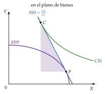
Fuente: elaboración propia a partir de Krugman, Obstfeld y Melitz (2018, cap. 9). Primer paso del gráfico 8.
Paso 2, los productores (gráfico 6): con el arancel sobre \(Y\), el precio relativo interior pasa a \[\frac{p_X}{p_Y(1+t)}<\frac{p_X}{p_Y}=\mathrm{RRI},\] una recta más plana que la de la RRI: el país se enfrenta a precios interiores distintos de los mundiales. Los productores responden al precio interior y producen donde la FPP es tangente a esa recta más plana, en \(P'\), con más \(Y\) y menos \(X\).
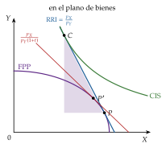
Fuente: elaboración propia a partir de Krugman, Obstfeld y Melitz (2018, cap. 9). Segundo paso del gráfico 8.
Paso 3, los consumidores (gráfico 7): el nuevo consumo, \(C'\), cumple 2 condiciones a la vez:
está sobre la recta de la RRI que pasa por \(P'\) (la discontinua, paralela a la inicial), porque el país sigue comerciando a los precios mundiales y la recaudación vuelve a los consumidores;
y en él la CIS es tangente a una recta con la pendiente del precio interior (la roja fina), porque los consumidores también pagan el arancel.2
El triángulo de comercio (el más oscuro) se reduce: \(A\) exporta e importa menos, y \(C'\) está en una CIS más baja que \(C\).
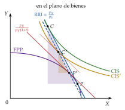
Fuente: elaboración propia a partir de Krugman, Obstfeld y Melitz (2018, cap. 9). Tercer paso del gráfico 8.
Paso 4, con curvas de oferta neta (gráfico 8, derecha): la ON del resto del mundo es la recta de la RRI que sale del origen, porque el resto del mundo compra y vende cualquier cantidad a ese precio; \(A\) se enfrenta a una oferta perfectamente elástica. El arancel contrae ON\(_A\) hacia el eje de \(Y\), y el nuevo corte está en la misma recta, más cerca del origen y en una CIC más baja. Los cortes \(E_0\) y \(E_1\) son los triángulos de comercio de la izquierda.
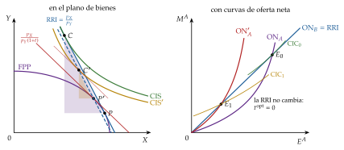
Fuente: elaboración propia a partir de Krugman, Obstfeld y Melitz (2018, cap. 9) y Gandolfo (2014, cap. 10).
Implicaciones:
en lo positivo, el comercio se reduce y gana el factor que usa intensivamente el bien protegido, mientras pierde el otro (Stolper-Samuelson) [ver tema 3.B.5];
en lo normativo, el bienestar baja: \(C'\) está en una CIS más baja que \(C\);
la RRI no cambia, y el arancel óptimo de un país pequeño es cero también en equilibrio general.
País grande: el arancel y la relación real de intercambio
El desplazamiento: para cada RRI, el arancel encarece \(Y\) dentro de \(A\), a \(p_Y(1+t)\), y \(A\) quiere comerciar menos (gráfico 9):
el arancel encarece en \(A\) el bien importado: la producción se desplaza a lo largo de la FPP hacia \(Y\) y el consumo de \(Y\) baja, así que \(A\) importa menos;
como tiene que pagar lo que importa (\(p_XE^A=p_YM^A\), la restricción presupuestaria del país), exporta también menos \(X\);
ON\(_A\) se contrae hacia el eje de \(Y\), a ON\('_A\), y a la RRI de libre comercio el comercio pasa de \(E_0\) a \(E'_1\).
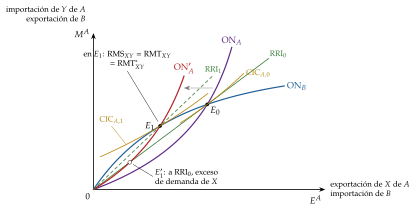
Fuente: elaboración propia a partir de Johnson (1953) y Gandolfo (2014, cap. 10).
El reparto: lo da el teorema de Stolper-Samuelson: sube la retribución real del factor que usa intensivamente el bien protegido [ver tema 3.B.5].3
El ajuste: en \(E'_1\), el mundo tiene exceso de demanda de \(X\) y exceso de oferta de \(Y\). Sube el precio relativo de \(X\), de modo que la RRI mejora para \(A\), hasta el nuevo corte, \(E_1\), con menos comercio. Así, la ley de Walras cierra el mercado mundial.
Así, en un país grande, el arancel tiene 2 efectos contrapuestos:
(+) mejora la RRI: \(A\) ejerce su poder de monopsonio como comprador de \(Y\) (al comprar menos, lo abarata) y de monopolio como vendedor de \(X\) (al vender menos, lo encarece). Es nuevo respecto del país pequeño, pero análogo a lo que ya pasaba en equilibrio parcial;
(\(-\)) distorsiona: el precio interior se aparta del mundial, y la producción y el consumo, de los eficientes. Es el mismo efecto que en un país pequeño, pero nuevo respecto del equilibrio parcial, porque ahora se ve en los 2 bienes.
Si domina el primero, \(A\) alcanza una CIC más alta (más arriba y a la izquierda): un país grande puede ganar con un arancel, como en el equilibrio parcial. ¿Con cuál gana más?
El arancel óptimo
a) Idea
¿Puede un país grande ganar con un arancel, y con cuál? «El pez grande se come al chico»: el país grande usa su peso en el mercado para pagar menos por lo que compra.
El arancel óptimo es el que maximiza el bienestar del país que lo pone, dados los demás. La idea viene de Torrens y Mill, y la fórmula, de Bickerdike (1906); la formulación con curvas de oferta neta es la de Johnson (1953).
b) Modelo
i) Supuestos
Los del modelo de Haberler y, además: \(A\) es grande (ON\(_A\) corta a ON\(_B\) en un tramo curvo de esta), competencia perfecta, la recaudación vuelve a los consumidores y \(B\) no responde.
ii) Desarrollo
En el libre comercio, \(E_0\), \(A\) cumple las 3 condiciones de eficiencia de un óptimo de Pareto [ver tema 3.A.22]:
la misma \(\mathrm{RMS}_{XY}\) para todos sus consumidores;
la misma \(\mathrm{RMST}_{LK}\) en las 2 industrias;
\(\mathrm{RMS}_{XY}=\mathrm{RMT}_{XY}\), que se ve en la pendiente de la CIC en \(E_0\).
Pero no cumple una cuarta: que su relación marginal de transformación interior sea igual a la que obtiene comerciando, la pendiente de ON\(_B\), \(\mathrm{RMT}^*_{XY}\). En \(E_0\), \(\mathrm{RMS}_{XY}=\mathrm{RMT}_{XY}=\mathrm{RRI}>\mathrm{RMT}^*_{XY}\): \(A\) tiene margen para ganar bienestar si pone un arancel.
El arancel óptimo lleva a \(A\) al punto de ON\(_B\) tangente a su CIC más alta, \(E_1\) (gráfico 9), donde \(\mathrm{RMS}_{XY}=\mathrm{RMT}_{XY}=\mathrm{RMT}^*_{XY}\) y ya no hay ganancias que sacar restringiendo más el comercio:
\[t^{\mathrm{opt}}=\frac{1}{\varepsilon^*-1}\quad\Longleftrightarrow\quad\frac{t^{\mathrm{opt}}}{1+t^{\mathrm{opt}}}=\frac{1}{\varepsilon^*}\tag{3}\]
donde \(\varepsilon^*\equiv\varepsilon^B_M\) es la elasticidad de la curva de oferta neta del resto del mundo, es decir, de su demanda de importaciones. Con la elasticidad de su oferta de exportaciones, \(\varepsilon^*_X=\varepsilon^*-1\), la misma fórmula es \(t^{\mathrm{opt}}=1/\varepsilon^*_X\), la del equilibrio parcial, (2) (derivación en el anexo B).
La segunda forma es la regla de la elasticidad inversa del monopolista, \(\mathcal{L}=1/\lvert\varepsilon_{q,p}\rvert\) [ver tema 3.A.17]: el país grande actúa como un monopolista de su exportación, o como un monopsonista de su importación.
Interpretación: la RRI es el precio medio al que \(A\) consigue sus importaciones, y el coste marginal es mayor, porque cada unidad más encarece todas las demás. El libre comercio iguala el precio interior al coste medio; el arancel óptimo lo iguala al marginal, como el monopsonista, que compra hasta que su valoración iguala el gasto marginal y no el precio.
Por qué \(\varepsilon^*>1\): en el tramo inelástico de ON\(_B\), \(A\) conseguiría las mismas importaciones con menos exportaciones subiendo el arancel, así que nunca se para ahí, igual que el monopolista no produce en el tramo inelástico de la demanda [ver tema 3.A.17].
Por encima del óptimo, el bienestar de \(A\) baja: al principio sigue por encima del libre comercio y después por debajo. Si \(A\) siguiera subiendo el arancel, ON\('_A\) solo cortaría a ON\(_B\) en el origen: no habría comercio y el arancel sería prohibitivo.
iii) Implicaciones
El arancel óptimo es positivo para un país grande y nulo para uno pequeño: si \(\varepsilon^*\to\infty\), ON\(_B\) es una recta desde el origen, la RRI no cambia y \(t^{\mathrm{opt}}=0\).
Es mayor cuanto más rígida es la oferta neta del resto del mundo: con \(\varepsilon^*=3\), del 50 %; con \(\varepsilon^*=11\), del 10 %.
El mismo resultado lo da un impuesto a la exportación del mismo tipo (Lerner, II.3).
El mundo pierde: lo que gana \(A\) se lo quita a \(B\), y además se pierde eficiencia. Es una política de «empobrecer al vecino» (beggar-thy-neighbour).
c) Extensiones
Una unión aduanera, con más peso en el mercado que cada socio por separado, puede fijar un arancel común que mejore su RRI [ver tema 3.B.10].
Con competencia imperfecta, el arancel puede ser óptimo también para extraer rentas de un monopolista extranjero o trasladar beneficios hacia las empresas nacionales [ver tema 3.B.8]. Con bienes diferenciados y competencia monopolística, es positivo aunque el país no pueda mover el precio de un bien homogéneo, porque encarece las variedades extranjeras frente a las nacionales [ver tema 3.B.6].
d) Evidencia empírica
Los países que fijaban sus aranceles antes de entrar en la OMC ponían aranceles unos 9 puntos más altos en los bienes cuya oferta extranjera es inelástica que en los de oferta elástica: el poder de mercado explica parte de la estructura arancelaria.
En cambio, los aranceles de Estados Unidos de 2018-2019 no abarataron lo que compraba: los precios de importación sin el arancel apenas bajaron, como si la oferta extranjera fuese infinitamente elástica (III.2).
e) Valoración
Exige que el país sea grande en ese bien y que el gobierno conozca \(\varepsilon^*\), que cambia con el tiempo: a largo plazo, los exportadores encuentran otros mercados y su oferta es más elástica.
Fuera de este caso, el arancel nunca es la mejor política: si el problema es interno, se corrige en su origen [ver tema 3.A.22].
Y, sobre todo, ignora la respuesta del otro país. ¿Y si los socios responden? El arancel óptimo de \(A\) empeora a \(B\), que tiene el mismo incentivo a poner el suyo. Johnson (1953) muestra que la sucesión de represalias acaba en un equilibrio de Nash en aranceles, en el que normalmente los 2 pierden respecto del libre comercio, como en un dilema del prisionero [ver tema 3.A.14] [ver tema 3.B.8]. Lo vemos a continuación con curvas de oferta neta.
La guerra arancelaria (Johnson, 1953)
Pregunta: ¿y si mis socios comerciales responden a mi arancel? Lo vemos en 3 pasos sobre el mismo gráfico.
Paso 1, el libre comercio (gráfico 10): ON\(_A\) y ON\(_B\) se cortan en \(E_0\), sobre la recta de la RRI\(_0\). Allí la CIC de \(A\) y la de \(B\) son tangentes a esa recta y entre sí: es un óptimo de Pareto para el mundo, pero no para \(A\), que, si es grande, puede mejorar su RRI. Las CIC de \(B\) son la imagen simétrica de las de \(A\) y dan más bienestar cuanto más abajo y a la derecha están (más importaciones de \(X\) y menos exportaciones de \(Y\)).
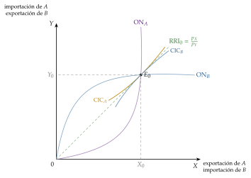
Paso 2, el arancel óptimo de \(A\) (gráfico 11): \(A\) contrae su curva a ON\('_A\) y el comercio pasa de \(E_0\) a \(E_1\), sobre ON\(_B\), donde su CIC es tangente a ON\(_B\) (el arancel óptimo, I.2.2). La RRI de \(A\) mejora, de RRI\(_0\) a RRI\(_1\), más inclinada. \(B\) pierde: tiene peor RRI, comercia menos y está en una CIC más baja, más cerca del eje de ordenadas.4
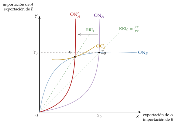
Paso 3, las represalias y el equilibrio de Nash (gráfico 12): \(E_1\) es óptimo para \(A\), pero no es un equilibrio de Nash: \(B\) tiene el mismo incentivo, pone su arancel óptimo dada ON\('_A\), contrae ON\(_B\) a ON\('_B\) y mejora su RRI a costa de \(A\); \(A\) responde, y así sucesivamente. Johnson (1953) muestra que la sucesión termina en un equilibrio de Nash en aranceles, \(E_N\), con comercio positivo, en el que la CIC de cada país es tangente a la ON con arancel del otro: ninguno quiere cambiar su arancel [ver tema 3.A.14].
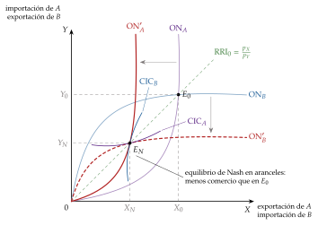
Fuente: elaboración propia a partir de Johnson (1953). Caso simétrico: la RRI no cambia y los 2 pierden.
Resultado: \(E_N\) es un equilibrio de Nash, pero no un óptimo de Pareto. Normalmente los 2 pierden frente al libre comercio, como en un dilema del prisionero: los 2 estarían mejor cooperando, pero ninguno tiene incentivo a desviarse solo. Pero puede ganar el país cuya ON es mucho más elástica que la del otro, que en la práctica es el país mucho mayor. La salida cooperativa (reciprocidad y reglas del GATT) se estudia aparte [ver tema 3.B.8], y el caso real de Estados Unidos y China, en el anexo E.
Casos especiales: las paradojas de Metzler y de Lerner
Hasta ahora, el arancel de un país grande hacía 2 cosas: mejoraba su RRI y encarecía dentro el bien importado, de modo que, por Stolper-Samuelson, subía la retribución real del factor que ese bien usa intensivamente. Con curvas de oferta neta poco elásticas, cualquiera de los 2 resultados puede invertirse (gráfico 13). En los 2 casos, el arancel lo pone \(A\) sobre \(Y\).
Debajo de cada panel del gráfico va la cadena de efectos, con 2 precios relativos: la RRI de \(A\), \(p_X/p_Y\) (la pendiente del rayo), y el precio relativo interior de \(X\), \(p_X/[p_Y(1+t)]\), que es el que mueve la producción. En el caso normal, el arancel sube \(p_X/p_Y\) (mejora la RRI), pero menos que \(1+t\), así que el precio interior de \(X\) baja y se protege \(Y\). En el de Metzler, la RRI mejora tanto (\(\uparrow\uparrow\)) que el precio interior de \(X\) sube: se desprotege el bien sobre el que se pone el arancel; la ON anómala es la del país sobre el que recae el arancel, \(B\). En el de Lerner, \(p_X/p_Y\) baja: el arancel empeora la RRI de quien lo pone, y la ON anómala es la del propio \(A\).
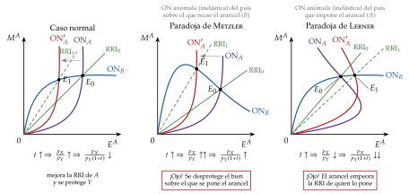
Fuente: elaboración propia a partir de Gandolfo (2014, cap. 10).
La paradoja de Metzler (1949): el arancel que desprotege
Idea: la RRI de \(A\) mejora tanto que el precio de \(Y\) dentro de \(A\), con el arancel incluido, baja: el arancel desprotege al sector que quería proteger.
Cuándo: si la ON del resto del mundo es anómala, con pendiente negativa en el tramo del corte (inelástica), y lo es más que la propensión de \(A\) a gastar en su bien exportado: \[\varepsilon^*<1-\mathrm{PMgC}^A_Y,\] donde \(\mathrm{PMgC}^A_Y\) es la parte de cada euro adicional de renta que \(A\) gasta en \(Y\). Hace falta, por tanto, mucha propensión a consumir el bien exportado. Una causa puede ser que la recaudación del arancel se gaste entera en el bien exportado: entonces la condición es \(\varepsilon^*<1\), más fácil de cumplir.
Por qué: en el tramo inelástico, cuando su RRI empeora, \(B\) tiene que exportar más \(Y\) para seguir pagando lo que importa. El precio mundial de \(Y\) baja más de lo que lo sube el arancel. Es un caso anómalo, pero no imposible.
Implicación: Stolper-Samuelson va al revés: el sector protegido se contrae, los recursos pasan al exportador y gana el factor intensivo en el bien exportado [ver tema 3.B.5].
La paradoja de Lerner (1936): el arancel que empeora la RRI
Idea: la RRI de \(A\) empeora con su propio arancel. Dicho con el refrán, «le sale el tiro por la culata».
De qué depende: de qué hace el Estado con la recaudación, que puede devolverla a los consumidores o gastarla en el bien importado, en el exportado o en los 2.
Cuándo: hace falta que el Estado gaste la recaudación en el bien importado. Si la gasta entera en \(Y\), la paradoja ocurre cuando la ON del propio \(A\) es inelástica en el tramo del corte: \[\varepsilon^A_M<1.\] En general, ocurre cuando \(\varepsilon^A_M\) es menor que la parte de la recaudación que el Estado gasta en \(Y\) (anexo B).
Por qué: los consumidores de \(A\) compran menos \(Y\), pero poco, porque su demanda es rígida, y el Estado compra con la recaudación más \(Y\) del que ellos dejan de comprar. A la RRI inicial, la demanda mundial de \(Y\) aumenta y su precio sube: ON\('_A\) corta a ON\(_B\) en un rayo menos inclinado que el de libre comercio.
Implicación: si la recaudación vuelve a los consumidores, la paradoja no puede darse. Es un aviso sobre el uso de la recaudación, más que sobre el arancel.
En un país pequeño, el arancel reduce el bienestar en \(b+d\) y redistribuye hacia los productores, el Estado y el factor intensivo en el bien protegido. En uno grande, además, mejora la RRI: un arancel pequeño siempre gana, y el óptimo es \(t^{\mathrm{opt}}=1/(\varepsilon^*-1)=1/\varepsilon^*_X\), a costa del resto del mundo y con el riesgo de que responda. Con curvas de oferta neta poco elásticas, el arancel puede desproteger (Metzler) o empeorar la RRI (Lerner). El arancel es, además, el instrumento más transparente: veamos qué cambia con los que actúan sobre las cantidades o sobre las exportaciones.
II. Instrumentos de política comercial (II): barreras no arancelarias
En el cante (10′): la apertura con la conclusión anticipada y la tabla de capítulos de la UNCTAD en una columna (1′). Las cuotas (3′): la equivalencia sobre el gráfico del arancel, la renta de la cuota y sus 3 destinos, las 4 excepciones de palabra y el gráfico de la cuota con monopolio nacional, con las cifras del acero. La subvención a la exportación (2′), con el gráfico del país pequeño y el resultado del país grande de palabra; el impuesto a la exportación y la simetría (1′), sin gráfico nuevo; las restricciones voluntarias (1′), sobre el gráfico de la cuota con la renta «fuera»; los otros instrumentos (2′), en 2 grupos de palabras clave. Los gráficos de la cuota en competencia y del impuesto a la exportación van como apoyo.
Una vez visto el arancel, pasamos a los instrumentos que lo sustituyeron cuando las rondas del GATT lo rebajaron. Conclusión anticipada: con competencia perfecta, casi cada instrumento no arancelario tiene un arancel equivalente; las diferencias están en quién se queda la renta, en cómo responden a los cambios del mercado y en lo que pasa con competencia imperfecta.
Por qué crecieron: las rondas del GATT rebajaron los aranceles, y la Ronda Kennedy (1964-1967) y la de Tokio (1973-1979) empezaron a negociar también las demás barreras. Pero tras la crisis del petróleo de los años 70, los países que ya no podían subir sus aranceles consolidados recurrieron a cuotas, restricciones «voluntarias» y reglamentos, menos visibles y fáciles de dirigir contra un solo país: es el neoproteccionismo.5
Una medida no arancelaria (MNA) es toda medida, distinta de un arancel ordinario, que puede afectar al comercio, a las cantidades, a los precios o a ambos. La clasificación internacional de la UNCTAD, de 2019, tiene 16 capítulos, de la A a la P (tabla 1).
Las medidas técnicas, las sanitarias y fitosanitarias (MSF) y los obstáculos técnicos al comercio (OTC), son las más frecuentes, y se distinguen de las demás en que pueden corregir un fallo de mercado: informan al consumidor de lo que no puede ver (seguridad, salud, medio ambiente). Por eso las admiten los acuerdos de la OMC sobre MSF y OTC, siempre que no discriminen y se basen en pruebas científicas o en normas internacionales [ver tema 3.B.33].
Pero también pueden proteger, porque el coste de adaptarse a una norma es fijo y lo paga sobre todo el productor extranjero. La OMC dio la razón a Estados Unidos y Canadá frente a la prohibición europea de la carne tratada con hormonas, y a Argentina frente a las restricciones de Estados Unidos a su carne por la fiebre aftosa.
Cuánto encarecen se mide con su equivalente ad valorem (III.1).
Estudiamos primero los instrumentos tradicionales de cantidad y de exportación, en equilibrio parcial y en un país pequeño salvo que se diga otra cosa, y después el resto.
| Grupo | Cap. | Medidas |
|---|---|---|
| Técnicas | A | Medidas sanitarias y fitosanitarias (MSF) |
| B | Obstáculos técnicos al comercio (OTC) | |
| C | Inspección previa a la expedición y otras formalidades | |
| No técnicas | D | Defensa comercial: antidumping, compensatorias y salvaguardias |
| E | Licencias no automáticas, cuotas y prohibiciones | |
| F | Control de precios, incluidos impuestos y cargas adicionales | |
| G | Medidas financieras | |
| H | Medidas que afectan a la competencia | |
| I | Medidas en materia de inversiones relacionadas con el comercio | |
| J | Restricciones a la distribución | |
| K | Restricciones a los servicios posventa | |
| L | Subvenciones (salvo las de exportación) | |
| M | Restricciones a la contratación pública | |
| N | Propiedad intelectual | |
| O | Normas de origen | |
| A la exportación | P | Medidas a la exportación |
Fuente: elaboración propia a partir de UNCTAD (2019).
II.1. Cuotas a la importación
Definición
Una cuota (o contingente) a la importación es un límite a la cantidad de un bien que se puede importar en un periodo. Las prohíbe, en general, el artículo XI del GATT, con excepciones (la agricultura antes de la Ronda Uruguay, la balanza de pagos, las salvaguardias) [ver tema 3.B.33].
Cómo se gestiona: el gobierno tiene que decidir cómo asegura que las importaciones no pasen del límite:
por orden de llegada (first-come, first-served): se deja entrar lo que llega hasta agotar la cuota;
con licencias subastadas: cada licencia da derecho a importar una unidad, y su precio tiende a la diferencia entre el precio interior y el mundial, la renta de la cuota;
con licencias asignadas sin subasta, gratis, a importadores nacionales o a los exportadores extranjeros.
Equivalencia con el arancel en competencia perfecta
Supuestos: los 5 de la competencia perfecta, con la misma lista y en el mismo orden que en todas las estructuras de mercado (tabla 2) [ver tema 3.A.16], y un país pequeño importador neto.
Resultado: es un debate que abrió Bhagwati (1965). Una cuota \(\bar M\) menor que las importaciones de libre comercio sube el precio interior hasta que la demanda de importaciones es igual a la cuota. Para cada cuota hay un arancel equivalente, el que da ese mismo precio y esas mismas importaciones (gráfico 14).6
Volvamos al acero: una cuota de 40 toneladas sube el precio de 20 a 30, como el arancel del 50 %. El consumo, la producción, los excedentes y la pérdida (\(b+d=100\)) son los mismos.
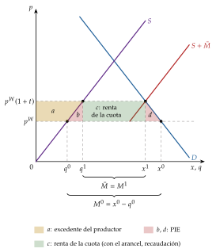
Fuente: elaboración propia a partir de Feenstra y Taylor (2021, cap. 8).
La diferencia está en el área \(c\): con el arancel es recaudación; con la cuota es la renta de la cuota, \((p-p^W)\bar M\) (400 en el ejemplo), y se la queda quien tiene la licencia:
si el Estado la subasta en competencia, la recupera: es el mismo resultado que el arancel;
si la regala a importadores nacionales, la renta se queda en el país, pero las empresas gastan recursos en conseguirla (grupos de presión, sobornos, capacidad ociosa para justificar más licencias): es la búsqueda de rentas, tal y como la estudió Krueger (1974), que convierte parte de \(c\) en pérdida [ver tema 4.B.2];
si la cede a los exportadores extranjeros o a su gobierno, el país pierde además \(c\): es lo que hace una restricción voluntaria a la exportación (II.4).
En resumen, con la cuota se fija la cantidad y se ajusta el precio; con el arancel, al revés.
| N.º | Supuesto | Qué significa |
|---|---|---|
| 1 | Agentes racionales | los consumidores maximizan su utilidad y las empresas, su beneficio |
| 2 | Información perfecta y simétrica | los consumidores conocen las características del producto y el precio, y las empresas, su tecnología y el precio; nadie sabe más que los demás |
| 3 | Producto homogéneo (sin sustitutivos cercanos) | los consumidores ven como sustitutivos perfectos las unidades de todas las empresas, de modo que solo les importa el precio |
| 4 | Mercado atomizado: muchos compradores y vendedores (precio-aceptantes) | cada uno es pequeño respecto al mercado y sus decisiones individuales no mueven el precio: todos son precio-aceptantes Se levanta con el monopolio nacional: hay un solo vendedor nacional, que la cuota deja fijar el precio |
| 5 | Libre entrada y salida (a largo plazo) | a largo plazo, si hay beneficios extraordinarios, entran empresas hasta agotarlos, y si hay pérdidas, salen |
Fuente: elaboración propia.
Cuándo deja de haber equivalencia
Si crece la demanda interior o baja el precio mundial: con el arancel, se importa más y el precio interior no cambia (o baja); con la cuota, las importaciones no se mueven y el precio interior sube (o no baja). La protección de la cuota aumenta sola, sin que nadie la decida, y con ella su arancel equivalente.
Con incertidumbre: el productor nacional sabe cuánto se importará con la cuota, pero no con el arancel. Por eso los productores prefieren las cuotas, y el gobierno que quiere asegurar la protección, también; pero no conoce de antemano el arancel equivalente, que hay que estimar.
Con transparencia: el coste de la cuota está escondido en el precio; el arancel se ve.
Con competencia imperfecta: la cuota da poder de mercado a las empresas nacionales. Lo vemos ahora.
Arancel y cuota con un monopolio nacional
Idea: el comercio disciplina al monopolista nacional, porque la competencia de las importaciones le impide subir el precio. Los instrumentos que limitan las importaciones le devuelven poder de mercado, pero no todos igual.
Supuestos: se levanta el supuesto 4 de la tabla 2. Una sola empresa nacional produce el bien, con coste marginal creciente \(\mathrm{CMg}(q)\); el país es pequeño y puede importar cuanto quiera a \(p^W\), menor que el precio de autarquía; sin costes de transporte.
Desarrollo, con el acero, si toda la industria es una sola empresa con \(\mathrm{CMg}=q\) (los 4 casos, con sus gráficos, en el anexo C):
en autarquía, es un monopolio: \(\mathrm{IMg}=\mathrm{CMg}\), con \(100-2q=q\), de modo que vende 33,3 a 66,7, un precio mayor que su coste marginal [ver tema 3.A.17];
con libre comercio, si sube el precio por encima de \(p^W\), los consumidores importan: la competencia de las importaciones hace horizontal su demanda a \(p^W\), y se comporta como una empresa competitiva, \(p^W=\mathrm{CMg}\). Pierde su poder de mercado: produce 20 y se importan 60;
con un arancel del 50 %, la demanda que ve es horizontal a \(p^W(1+t)=30\): produce 30, se importan 40 y el resultado es el de la competencia perfecta. El arancel limita el precio que puede cobrar, pero no le da poder de mercado mientras sigan entrando importaciones;
con una cuota de 40, la misma importación que con el arancel, el monopolista sabe que, por mucho que suba el precio, no entrará más: es el monopolista de la demanda residual, \(x(p)-\bar M=60-p\), y elige \(\mathrm{IMg}=\mathrm{CMg}\) sobre ella: \(60-2q=q\), produce 20 y cobra 40 (gráfico 15).
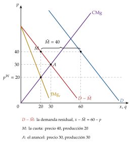
Fuente: elaboración propia a partir de Bhagwati (1965) y Feenstra y Taylor (2021, cap. 9).
Implicaciones:
con monopolio nacional, la cuota y el arancel no son equivalentes: con la misma importación, la cuota da un precio mayor (40 frente a 30) y una producción nacional menor (20 frente a 30);
la cuota cuesta más: en el ejemplo, la pérdida frente al libre comercio es de 200 con la cuota y de 100 con el arancel;
el arancel equivalente a una cuota por el precio (el que da 40) es mayor que el equivalente por las importaciones, y por eso, con poder de mercado, medir las cuotas por su equivalente arancelario es delicado (III.1).
II.2. Subsidios a la exportación
Una subvención a la exportación es un pago del Estado por cada unidad exportada, fijo o en un porcentaje \(s\) del precio, directo o en forma de ventaja fiscal o crediticia, siempre que dependa de exportar (o de usar productos nacionales en lugar de importados). Las prohíbe el Acuerdo sobre Subvenciones y Medidas Compensatorias, y el país afectado puede responder con derechos compensatorios [ver tema 3.B.33].
País pequeño (gráfico 16): el exportador cobra \(p^W(1+s)\) por lo que vende fuera, así que no vende dentro por menos, y el precio interior sube a \(p^W(1+s)\), siempre que se impida reimportar:
la producción sube y el consumo baja, de modo que se exporta más;
los consumidores pierden \(a+b\), los productores ganan \(a+b+c\) y la subvención cuesta \(b+c+d\);
la pérdida neta es \(b+d\): distorsión en el consumo y en la producción, como con el arancel.
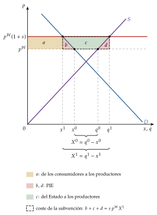
Fuente: elaboración propia a partir de Feenstra y Taylor (2021, cap. 10).
País grande: al exportar más, hace bajar el precio mundial, y regala al resto del mundo parte de la subvención, un empeoramiento de su RRI que se suma a la pérdida. Es lo contrario del arancel: con competencia perfecta no hay subvención a la exportación óptima; la política óptima de un exportador grande es un impuesto a la exportación (II.3).
¿Por qué se han usado? Por economía política: benefician a un sector concentrado, como el agrícola, a costa de consumidores y contribuyentes dispersos. Las restituciones a la exportación de la política agrícola común sostuvieron durante décadas los precios interiores por encima de los mundiales [ver tema 3.B.38].
En la Conferencia de Nairobi (2015), los miembros de la OMC se comprometieron a eliminar las subvenciones a la exportación agrícola: los países desarrollados, de inmediato, y los países en desarrollo, antes de 2019. La evolución desde Hong Kong (2005) está en el anexo D.
Con ellas ganan los exportadores agrícolas y pierden los países importadores netos de alimentos, muchos de ellos de renta baja, que la OMC reconoce en una lista propia y que conservan más plazo para la ayuda a la comercialización.
En la alta tecnología, con pocas empresas, una subvención puede trasladar beneficios de la empresa extranjera a la nacional: es el caso de Airbus y Boeing y el argumento de la política comercial estratégica [ver tema 3.B.8].
II.3. Impuestos a la exportación
Un impuesto a la exportación grava los bienes que salen del país. Se usa para asegurar el abastecimiento interior, abaratar un bien dentro, fomentar que la materia prima se transforme en el país o recaudar.
En diciembre de 1995, la Comisión Europea fijó un impuesto a la exportación del trigo blando.
En 2007-2008, con el auge de los precios de los alimentos, varios exportadores restringieron sus ventas al exterior para abaratar su mercado interior, y con ello subieron aún más los precios mundiales.
País pequeño (gráfico 17): el productor cobra por lo que exporta \(p^W\) menos el impuesto, así que el precio interior baja; se produce menos y se consume más:
los consumidores ganan \(a\), los productores pierden \(a+b+c+d\) y el Estado recauda \(c\);
la pérdida neta es \(b+d\).
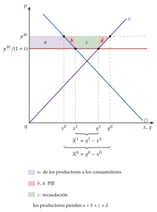
Fuente: elaboración propia a partir de Feenstra y Taylor (2021, cap. 10).
País grande: al exportar menos, sube el precio mundial y mejora su RRI, así que hay un impuesto a la exportación óptimo, el simétrico del arancel óptimo. Con muchas empresas nacionales que compiten fuera, es también la política estratégica óptima [ver tema 3.B.8].
El teorema de la simetría de Lerner (1936): en equilibrio general, un arancel ad valorem a la importación y un impuesto ad valorem a la exportación del mismo tipo tienen los mismos efectos reales, porque cambian igual el precio relativo interior: con el arancel, \(p_X/[p_Y(1+t)]\); con el impuesto, \([p_X/(1+t)]/p_Y\). «Tanto monta, monta tanto».
Intuición: un país que importa menos tiene que exportar menos, porque paga menos importaciones, y al revés. Un arancel es también un impuesto a la exportación.
Límites: exige comercio equilibrado a largo plazo, precios y tipos de cambio flexibles y que la recaudación se use igual. Con déficits, activos en manos extranjeras o precios rígidos, deja de cumplirse. En equilibrio parcial, en un solo mercado, los 2 impuestos no son simétricos.
II.4. Restricciones voluntarias de exportaciones
Una restricción voluntaria a la exportación (RVE) es una cuota que el país exportador pone a sus exportaciones a petición del importador, normalmente para evitar una medida peor. El caso clásico es el de los automóviles japoneses exportados a Estados Unidos desde 1981. Como dice el refrán, el exportador hace «de la necesidad virtud»: acepta limitarse y se queda con la renta.
Efectos en el importador: los de una cuota cuyas licencias se regalan a los exportadores extranjeros. La renta de la cuota, \(c\), se va fuera, y la pérdida del importador es \(b+c+d\), mayor que con un arancel o con una cuota propia.
Con el acero, una RVE de 40 toneladas le cuesta al país \(50+400+50=500\), 5 veces lo que cuesta el arancel del 50 %.
Efectos en el exportador: pierde ventas, pero se queda con la renta, que no recauda su Estado, sino sus empresas. Por eso no equivale del todo a un impuesto a la exportación, y si sus empresas actúan como un cártel y el mercado es grande, el exportador puede incluso ganar.
A largo plazo: como el límite es en número de unidades, los exportadores suben la calidad y venden coches más caros y mejor equipados.
Por qué se usaron: no infringían formalmente el GATT, porque las aplicaba el exportador. El Acuerdo sobre Salvaguardias de la Ronda Uruguay prohíbe buscar, adoptar o mantener restricciones voluntarias de las exportaciones y obligó a eliminar las existentes [ver tema 3.B.33].
II.5. Otros instrumentos tradicionales
Además de los anteriores, los gobiernos disponen de otros instrumentos, que se agrupan en 2: los de defensa comercial, que la OMC permite como respuesta a prácticas desleales o a oleadas de importaciones, y el resto, que afectan al comercio a través del tipo de cambio, la financiación, la compra pública o la regulación.
La defensa comercial
Medidas antidumping: hay dumping cuando una empresa exporta por debajo de su valor normal, el precio en su mercado de origen o, si no hay ventas representativas, su coste más un margen. Si causa un daño importante a la producción nacional, el país importador puede poner un derecho antidumping igual, como máximo, al margen de dumping (artículo VI del GATT y Acuerdo Antidumping).
El análisis económico: el dumping persistente es una discriminación de precios de tercer grado entre 2 mercados separados por aranceles o costes de transporte: el exportador cobra menos donde la demanda es más elástica, que suele ser el mercado extranjero, donde compite con más empresas [ver tema 3.A.17].
Viner (1923) distinguía 3 tipos:
el esporádico, para colocar excedentes;
el persistente, la discriminación de precios;
el predatorio, para expulsar al competidor y subir después el precio. Solo este perjudica al país importador en conjunto.
Con oligopolio, puede haber dumping en los 2 sentidos a la vez, el dumping recíproco [ver tema 3.B.6].
La valoración: el consumidor del país importador gana con el dumping persistente; el derecho antidumping protege al productor, y por eso se ha convertido en uno de los instrumentos de protección más usados.
Medidas compensatorias: derechos para neutralizar una subvención extranjera que causa daño; por ejemplo, los que puso la Unión a los vehículos eléctricos chinos en 2024.
Salvaguardias: aranceles o cuotas temporales ante un aumento imprevisto de las importaciones que daña gravemente a una industria, aunque no haya práctica desleal.
Su regulación [ver tema 3.B.33] y su aplicación en la Unión [ver tema 3.B.41] se estudian aparte.
Otros instrumentos
Tipos de cambio múltiples: una autoridad de control de cambios vende la divisa a tipos distintos según el bien. Un tipo caro para las importaciones de lujo es un arancel, y uno favorable para ciertas exportaciones, una subvención. Los desaconseja el FMI (artículo VIII de su Convenio Constitutivo).
Depósitos previos a la importación: el importador inmoviliza, sin intereses, una cantidad proporcional al valor de lo que importa; su coste de oportunidad funciona como un arancel.
Comercio de Estado y contratación pública: el Estado compra o vende, directamente o con empresas con derechos exclusivos, y puede preferir a los productores nacionales; el Acuerdo sobre Contratación Pública de la OMC, plurilateral, limita esa preferencia entre sus firmantes.
Exigencias de contenido local: obligan a que una parte del producto final se fabrique en el país. Funcionan como una cuota sobre los insumos importados, cuya renta va a los productores nacionales de insumos, y las prohíbe el Acuerdo sobre las Medidas en materia de Inversiones relacionadas con el Comercio.
Formalidades aduaneras: inspecciones, documentos y plazos que encarecen la importación; el Acuerdo sobre Facilitación del Comercio de la OMC busca reducirlos.
Ayuda ligada: ayuda al desarrollo condicionada a que se compre en el país donante. Es una subvención a la exportación del donante, y puede encarecer un proyecto de desarrollo entre un 15 % y un 30 % [ver tema 3.B.42].
Créditos a la exportación con apoyo oficial: financiación o seguro público de las exportaciones, cuyas condiciones mínimas fija el Consenso de la OCDE para que no sean subvenciones encubiertas [ver tema 4.A.24].
Embargos y sanciones: la prohibición total o parcial de comerciar con un país, por motivos políticos o de seguridad. Por ejemplo, el de Estados Unidos a Cuba.7
Nuevos instrumentos en frontera: el mecanismo de ajuste en frontera por carbono (MAFC) de la Unión está en su régimen definitivo desde el 1 de enero de 2026: los importadores de algunos productos compran certificados por las emisiones incorporadas, para que la producción no se vaya fuera. No es proteccionista en su intención, pero es un ajuste en frontera [ver tema 3.B.31].
Con competencia perfecta, las barreras no arancelarias tienen casi siempre un arancel equivalente, pero cuestan más: dejan la renta a quien tiene la licencia o al exportador, protegen más cuando crece la demanda, dan poder de mercado a los monopolios nacionales y se ven menos. La subvención a la exportación, además, empeora la RRI de un país grande, y el impuesto a la exportación es la otra cara del arancel. Por eso la pregunta que sigue es cómo se mide la protección que dan todos estos instrumentos.
III. Medición de los efectos de los instrumentos
En el cante (3′30″): la medición (2′): medias simple y ponderada de palabra, la fórmula de la protección efectiva con el ejemplo del coche y los índices modernos en una frase; la evidencia (1′30″), de palabra: quién pagó los aranceles de 2018-2019 y el poder de mercado en los aranceles.
Vistos los instrumentos, pasamos a medir cuánto protegen y qué efectos tienen. Conclusión anticipada: el arancel nominal medio da una idea pobre de la protección, porque olvida los insumos y las barreras no arancelarias; los índices modernos los tienen en cuenta, y la evidencia reciente confirma que los aranceles los pagan sobre todo los consumidores y las empresas del país que los pone.
III.1. Medición del proteccionismo
Protección nominal: lo que sube el precio interior de un bien sobre el precio en frontera por la protección; para un arancel, el propio \(t\). Es la óptica del consumidor. Para resumir la estructura arancelaria de un país se usa el arancel medio:
simple: la media de los aranceles de todas las partidas. Exagera la protección si las partidas con aranceles altos apenas se comercian;
ponderado por las importaciones: la subestima, porque un arancel prohibitivo no tiene importaciones y pesa cero. Por eso la media simple mundial casi duplica a la ponderada (gráfico 1).
Protección efectiva: Corden (1966), Balassa (1965) y Johnson (1965) criticaron el arancel medio porque no tiene en cuenta los bienes intermedios, que hoy son algo más de la mitad, el 52 %, del comercio de mercancías sin combustibles. La protección efectiva mide lo que sube, por la estructura arancelaria, el valor añadido por unidad de la industria \(j\), que es lo que retribuye a sus factores. Si \(a_{ij}\) es la parte del valor del bien \(j\), a precios de libre comercio, que corresponde al insumo importado \(i\), \[\tag{4} z_j=\frac{t_j-\sum_i a_{ij}\,t_i}{1-\sum_i a_{ij}}.\] La fórmula sale de comparar el valor añadido con y sin aranceles.8
Ejemplo: un coche vale 100 en el mercado mundial y lleva 60 de piezas importadas, \(a_{ij}=0{,}6\):
con un arancel del 10 % al coche y ninguno a las piezas, el valor añadido pasa de 40 a 50: \(z=10/40\), el 25 %;
con un 5 % a las piezas, \(z=(10-3)/40\), el 17,5 %;
con un 20 % a las piezas, \(z=(10-12)/40\), el \(-5\) %: la industria está desprotegida aunque su producto tenga arancel. «Desnudar a un santo para vestir a otro».
Implicaciones: la protección efectiva aumenta si suben los aranceles del producto final o bajan los de los insumos; supera a la nominal si el insumo paga menos que el producto (\(t_i<t_j\)) y es negativa si \(t_j<\sum_i a_{ij}t_i\). Por eso el escalonamiento arancelario (I.1) protege mucho a las industrias transformadoras y dificulta que los países productores de materias primas las transformen. En cadenas de valor fragmentadas, un arancel sobre un insumo es un impuesto a las industrias nacionales que lo usan.
Críticas:
supone un país pequeño: los aranceles no cambian los precios mundiales de los insumos ni del producto;
supone coeficientes técnicos fijos, de Leontief. Si la empresa puede sustituir el insumo gravado por otros, la medida con los coeficientes de libre comercio subestima la protección efectiva;
en equilibrio general, no predice bien hacia dónde van los recursos, porque los aranceles mueven también el tipo de cambio.
Índices de restricción comercial: Anderson y Neary (1996) definieron el índice de restricción comercial (TRI) como el arancel uniforme que deja al país con el mismo bienestar que su estructura de protección, y Kee, Nicita y Olarreaga (2009), el OTRI, el que deja el mismo volumen de importaciones. Al ponderar cada arancel por su efecto (por la elasticidad de la importación) y no por lo que se importa, corrigen el sesgo del arancel ponderado.
Equivalentes ad valorem de las medidas no arancelarias: el arancel que reduciría las importaciones lo mismo que la medida. Se estiman con ecuaciones de gravedad o de demanda de importaciones. Kee, Nicita y Olarreaga (2009) los estimaron para 78 países, y en muchos de ellos las barreras no arancelarias protegen más que los aranceles.
III.2. Evidencia empírica de la integración comercial
Aquí, «integración comercial» quiere decir apertura frente a protección: interesa la evidencia normativa, la que mide los efectos de cambios en la política comercial sobre el comercio, los precios, el PIB y el bienestar. La de la integración regional se estudia aparte [ver tema 3.B.10].
Métodos: los efectos se estiman ex ante con modelos de equilibrio general computable (CGE), que simulan un cambio de política en una economía calibrada, y ex post con ecuaciones de gravedad, que comparan flujos de comercio con y sin la medida.9 Los nuevos modelos cuantitativos de comercio los acercan: con una ecuación de gravedad con fundamentos, la ganancia del comercio depende solo de la parte del gasto que se compra dentro y de la elasticidad del comercio.10
¿Quién paga el arancel? Los aranceles de Estados Unidos de 2018-2019 se trasladaron casi enteros a los precios de importación: los exportadores extranjeros apenas bajaron sus precios, y lo pagaron los compradores estadounidenses.
La pérdida de consumidores y empresas compradoras superó con mucho a la recaudación y a lo que ganaron los productores protegidos, y las represalias recayeron sobre todo en la agricultura.
En las tiendas, el traslado fue menor, porque los minoristas absorbieron parte del arancel en su margen.
Es la predicción del país pequeño, no la del grande: la mejora de la RRI que promete el arancel óptimo no apareció en esos bienes, como si la oferta extranjera fuese muy elástica (I.2.2). La historia de esa guerra comercial, hasta 2026, está en el anexo E.
¿Se usa el poder de mercado? Sí, donde las reglas no lo impiden: antes de entrar en la OMC, los países ponían aranceles más altos en los bienes de oferta extranjera inelástica. Las reglas multilaterales sirven, en parte, para desactivar ese incentivo [ver tema 3.B.8].
El coste de las restricciones de cantidad: la RVE de los automóviles japoneses subió los precios y la calidad de los coches importados y dejó la renta en los fabricantes japoneses, como predice la teoría (II.4).
La protección se mide mal con el arancel medio: hay que tener en cuenta los insumos (protección efectiva) y las barreras no arancelarias (índices de restricción y equivalentes ad valorem). Y la evidencia reciente dice que el arancel lo paga sobre todo quien lo pone.
Conclusión
Recapitulación:
En conclusión,
en un país pequeño, toda barrera reduce el bienestar y redistribuye hacia los productores protegidos, el Estado o quien tenga la renta, y hacia el factor intensivo en el bien protegido;
un país grande puede ganar con el arancel óptimo, \(t^{\mathrm{opt}}=1/(\varepsilon^*-1)\), pero a costa de los demás y con el riesgo de que respondan;
los instrumentos de cantidad equivalen al arancel con competencia perfecta, pero cuestan más cuando dejan la renta fuera, cuando crece la demanda o cuando hay un monopolio nacional; y la protección de verdad se mide en el valor añadido y con las barreras no arancelarias.
Relevancia:
Los aranceles han vuelto, con Estados Unidos en 2018 y en 2025 y las represalias de sus socios; las barreras no arancelarias protegen en muchos países más que los aranceles, y la evidencia confirma la teoría del país pequeño: el arancel lo pagan sobre todo los consumidores y las empresas del país que lo pone.
Detrás de cada barrera hay grupos que ganan y grupos que pierden, y esa economía política explica por qué se ponen.
Extensiones:
Con oligopolio, la política comercial puede trasladar beneficios hacia las empresas nacionales, la política comercial estratégica [ver tema 3.B.8]; la eliminación de barreras entre unos pocos países, la integración [ver tema 3.B.10]; las reglas multilaterales que limitan estos instrumentos [ver tema 3.B.33]; la política comercial de la Unión [ver tema 3.B.41]; la apertura como política de competencia, y la promoción de las exportaciones con instrumentos compatibles con esas reglas [ver tema 4.A.24].
Opinión:
Casi todos estos instrumentos crean diferencias de competitividad artificiales, difíciles de sostener a largo plazo, y son una forma cara de conseguir lo que se consigue mejor de otra manera.
Si el problema es de reparto, compensar a los perdedores es más barato que proteger; si es un fallo de mercado, se corrige en su origen [ver tema 3.A.22]; y si se quiere apoyar a las empresas exportadoras, la promoción exterior compatible con la OMC lo hace sin cerrar el mercado propio [ver tema 4.A.24].
El único argumento de eficiencia a favor del arancel, el del país grande, es el que más fácilmente acaba en una guerra comercial.
Idea final:
¿Qué consigue un país cuando le pone puertas a su comercio, y quién las paga? Al campo se le pueden poner puertas (aranceles, cuotas, licencias, reglamentos), pero casi siempre las paga quien se queda dentro.
Solo el país grande puede cobrárselas a los de fuera, y solo mientras los de fuera no pongan las suyas.
A. Anexo: las curvas de oferta neta y las curvas de indiferencia comercial, paso a paso
Supuestos
2 países (\(A\) y \(B\)), 2 bienes homogéneos (\(X\) e \(Y\)) y 2 factores (trabajo y capital), homogéneos, perfectamente divisibles y en cantidades dadas, móviles dentro de cada país (largo plazo) e inmóviles entre países.
Tecnología neoclásica de buen comportamiento, con rendimientos constantes a escala y productividades marginales positivas y decrecientes [ver tema 3.A.11], de modo que la frontera de posibilidades de producción (FPP) es cóncava, y no una recta como en el modelo de Ricardo.11
Preferencias sociales representables por curvas de indiferencia sociales (CIS) monótonas y estrictamente convexas, que dan más bienestar cuanto más lejos están del origen.
Competencia perfecta en los mercados de bienes y de factores, libre comercio y sin costes de transporte.
Autarquía y libre comercio
Autarquía: el país consume lo que produce, en la tangencia de la FPP con la CIS más alta, donde \(\mathrm{RMT}_{XY}=\mathrm{RMS}_{XY}\); la pendiente común es el precio relativo de autarquía, \(p_X/p_Y\) (gráfico 18).

Fuente: elaboración propia a partir de Haberler (1936) y Gandolfo (2014, cap. 3).
Libre comercio: con una RRI mayor que su precio de autarquía, \(X\) es relativamente más caro fuera, y \(A\) exporta \(X\) e importa \(Y\). Separa la producción del consumo:
produce donde \(\mathrm{RMT}_{XY}=\mathrm{RRI}\): más \(X\) y menos \(Y\) que en autarquía;
consume donde \(\mathrm{RMS}_{XY}=\mathrm{RRI}\), sobre la recta de la RRI que pasa por el punto de producción, en una CIS más alta;12
exporta \(E^A=X^A_P-X^A_C\) e importa \(M^A=Y^A_C-Y^A_P\) (el triángulo de comercio), con \(M^A=\mathrm{RRI}\cdot E^A\). La especialización es incompleta, porque la FPP es cóncava.
La curva de oferta neta
La curva de oferta neta (ON) de \(A\) formaliza la demanda recíproca de Mill: la RRI se fija de modo que el valor de las exportaciones iguale al de las importaciones. Para cada RRI, recoge el par \((E^A,M^A)\); se obtiene girando la recta de la RRI y llevando los catetos del triángulo de comercio a unos ejes con \(E^A\) en abscisas y \(M^A\) en ordenadas.13
Parte del origen, tangente a la recta del precio de autarquía, y se curva hacia el eje del bien importado. Su forma depende de la elasticidad de la demanda de importaciones, \(\hat E^A=(\varepsilon^A_M-1)\widehat{\mathrm{RRI}}\) [ver tema 3.B.5]:
sube hacia la derecha en el tramo elástico (\(\varepsilon^A_M>1\)): al encarecerse \(X\), el país ofrece más \(X\) para importar más \(Y\);
se dobla hacia atrás en el tramo inelástico (\(\varepsilon^A_M<1\)): \(X\) vale tanto que el país consigue más importaciones con menos exportaciones.
La de \(B\) es la simétrica, con \(Y\) como exportación (gráfico 20).
Las curvas de indiferencia comercial
Las curvas de indiferencia comercial (CIC) de \(A\) son los vectores de comercio \((E^A,M^A)\) que le dan la misma utilidad (gráfico 19):
tienen pendiente positiva: exportar es un coste, y para compensarlo hay que importar más;
son convexas: cada unidad más que se exporta exige cada vez más importaciones para mantener la utilidad;
dan más bienestar cuanto más arriba y a la izquierda están.

Fuente: elaboración propia a partir de Meade (1952) y Gandolfo (2014, cap. 3).
ON\(_A\) es el lugar de las tangencias de sus CIC con las rectas de la RRI que salen del origen.
El equilibrio
Está en el corte de ON\(_A\) y ON\(_B\), donde lo que \(A\) quiere exportar de \(X\) es lo que \(B\) quiere importar, y al revés. La RRI de equilibrio es la pendiente del rayo que va del origen a ese punto; en él, las CIC de los 2 países son tangentes entre sí y a ese rayo, de modo que el libre comercio es un óptimo de Pareto mundial.
Existencia: las 2 curvas parten del origen con pendientes distintas (los 2 precios de autarquía) y se cortan.
Unicidad: no la garantiza que los bienes sean normales; si una curva tiene un tramo inelástico, puede cortar a la otra varias veces, y los equilibrios se alternan entre estables e inestables.
Estabilidad: la condición de Marshall-Lerner en el trueque, \(\lvert\varepsilon^A_M\rvert+\lvert\varepsilon^B_M\rvert>1\) [ver tema 3.B.5] [ver tema 3.B.12].

Fuente: elaboración propia a partir de Marshall (1879), Meade (1952) y Gandolfo (2014, cap. 3).
B. Anexo: derivaciones del arancel óptimo y de las paradojas de Metzler y Lerner
El arancel óptimo en equilibrio parcial
El país grande importa \(M(p)\) al precio interior \(p=p^*(1+t)\), y el resto del mundo le vende \(X^*(p^*)\), con \(M=X^*\) en equilibrio. El bienestar es el excedente de consumidores y productores más la recaudación, \(t\,p^*M\).
Ante un cambio del arancel, el excedente varía en \(-M\,dp\) y la recaudación en \(d[(p-p^*)M]=M\,dp-M\,dp^*+(p-p^*)\,dM\), así que \[dW=-M\,dp^*+(p-p^*)\,dM.\] El primer término es la mejora de la RRI (\(dp^*<0\)) y el segundo, la distorsión (\(dM<0\)).
En \(t=0\), \(p=p^*\) y \(dW=-M\,dp^*>0\): un arancel pequeño siempre mejora el bienestar.
En el óptimo, \(dW=0\): \(t\,p^*=M\,dp^*/dM\), es decir, \[t^{\mathrm{opt}}=\frac{M}{p^*}\frac{dp^*}{dM}=\frac{1}{\varepsilon^*_X},\qquad \varepsilon^*_X\equiv\frac{dX^*}{dp^*}\frac{p^*}{X^*}.\]
∎
El arancel óptimo con curvas de oferta neta
Escribimos ON\(_B\) como \(M^A=g(E^A)\): lo que \(A\) consigue importar si exporta \(E^A\). La RRI es la pendiente media, \(M^A/E^A\), y \(g'(E^A)\) la marginal, la \(\mathrm{RMT}^*_{XY}\).
\(A\) elige el punto de ON\(_B\) en su CIC más alta: tangencia, \(\mathrm{RMS}_{XY}=g'(E^A)\). Como sus consumidores igualan la RMS al precio interior, \(\mathrm{RRI}/(1+t)\), el arancel óptimo cumple \[1+t=\frac{M^A/E^A}{g'(E^A)}=\frac{1}{e},\qquad e\equiv\frac{d\ln M^A}{d\ln E^A}\ \text{a lo largo de ON}_B.\]
La demanda de importaciones de \(B\) (sus importaciones son \(E^A\) y su precio relativo, la RRI) tiene elasticidad \(\varepsilon^*\): \(d\ln E^A=-\varepsilon^*\,d\ln\mathrm{RRI}=-\varepsilon^*(d\ln M^A-d\ln E^A)\). Despejando, \(e=(\varepsilon^*-1)/\varepsilon^*\), y \[t^{\mathrm{opt}}=\frac{1}{e}-1=\frac{1}{\varepsilon^*-1}.\]
La oferta de exportaciones de \(B\) (\(M^A\)) frente a su precio relativo (\(E^A/M^A\)) tiene elasticidad \(\varepsilon^*_X=e/(1-e)=\varepsilon^*-1\): las 2 fórmulas, (3) y (2), son la misma.
∎
Metzler y Lerner en un mismo sistema
Partimos del libre comercio y ponemos un arancel pequeño \(dt\) sobre \(Y\). Sea \(\pi\) el precio relativo interior de \(Y\) en \(A\) y \(p\) el mundial, con \(\pi=p(1+t)\). El Estado gasta en \(Y\) una parte \(\mathrm{PMgC}^G_Y\) de la recaudación; si la devuelve a los consumidores, \(\mathrm{PMgC}^G_Y=\mathrm{PMgC}^A_Y\).
Demanda de importaciones de \(A\): por la ecuación de Slutsky, su elasticidad no compensada es la compensada (de consumo y producción) más la propensión a gastar en \(Y\), \(\varepsilon^A_M=\varepsilon^{A,h}_M+\mathrm{PMgC}^A_Y\) [ver tema 3.A.8]. Con el gasto del Estado, en \(t=0\): \[d\ln M^A=-\varepsilon^A_M\,(d\ln p+dt)+\mathrm{PMgC}^G_Y\,dt.\]
Oferta de exportaciones de \(B\): \(d\ln X^B=(\varepsilon^B_M-1)\,d\ln p\) [ver tema 3.B.5].
Equilibrio, \(d\ln M^A=d\ln X^B\): \[\frac{d\ln p}{dt}=-\frac{\varepsilon^A_M-\mathrm{PMgC}^G_Y}{\varepsilon^A_M+\varepsilon^B_M-1},\qquad \frac{d\ln \pi}{dt}=\frac{\varepsilon^B_M-\left(1-\mathrm{PMgC}^G_Y\right)}{\varepsilon^A_M+\varepsilon^B_M-1}.\] El denominador es positivo si el equilibrio es estable (Marshall-Lerner, \(\varepsilon^A_M+\varepsilon^B_M>1\)).
Lerner: el precio mundial de \(Y\) sube (la RRI de \(A\) empeora) si \(\varepsilon^A_M<\mathrm{PMgC}^G_Y\). Si el Estado gasta toda la recaudación en \(Y\), si \(\varepsilon^A_M<1\). Si la devuelve a los consumidores, nunca, porque \(\varepsilon^A_M-\mathrm{PMgC}^A_Y=\varepsilon^{A,h}_M>0\).
Metzler: el precio interior de \(Y\) baja si \(\varepsilon^B_M<1-\mathrm{PMgC}^G_Y\). Con la recaudación devuelta, \(\varepsilon^*<1-\mathrm{PMgC}^A_Y\); si el Estado la gasta en \(X\), \(\varepsilon^*<1\).
∎
C. Anexo: el monopolio nacional en autarquía, con libre comercio y con arancel
Autarquía: el monopolista elige \(\mathrm{IMg}(q^M)=\mathrm{CMg}(q^M)\), con \(p^M>\mathrm{CMg}\) y \(q^M<q^c\), donde \(q^c\) es la producción competitiva (corte de la demanda con el CMg, al precio \(p^c\)) [ver tema 3.A.17]. En el acero, \(q^M=33{,}3\), \(p^M=66{,}7\), \(q^c=50\) y \(p^c=50\) (gráfico 21, izquierda).
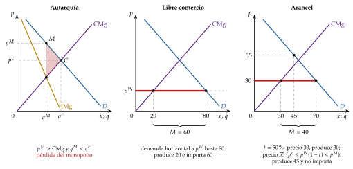
Fuente: elaboración propia a partir de Feenstra y Taylor (2021, cap. 9).
Libre comercio con \(p^W<p^c\): la demanda del monopolista es horizontal a \(p^W\) hasta \(x(p^W)\); produce donde \(\mathrm{CMg}=p^W\) y el resto se importa. El comercio elimina el poder de mercado y su pérdida (centro).
Arancel (derecha):
con \(p^W(1+t)<p^c\), todo es como con competencia perfecta a ese precio;
con \(p^c\leq p^W(1+t)<p^M\), el monopolista cobra justo \(p^W(1+t)\) y abastece toda la demanda: no se importa nada, aunque el arancel esté por debajo del que sería prohibitivo para el monopolista;14
con \(p^W(1+t)\geq p^M\), recupera el precio de monopolio.
Cuota: es el caso del gráfico 15, en el que el monopolista vuelve a tener poder de mercado sobre la demanda residual.
D. Anexo: las subvenciones agrícolas en la OMC, de Hong Kong a Nairobi
En Hong Kong (2005) se acordó eliminar las subvenciones a la exportación agrícola para finales de 2013, pero el compromiso quedó atado al cierre de la Ronda de Doha y no llegó a aplicarse.
En Nairobi (2015) se cerró por separado: las Decisiones sobre la competencia de las exportaciones y sobre el algodón fijaron los plazos de la tabla 3 [ver tema 3.B.33].
| Hong Kong (2005) | Nairobi (2015) y después | |
|---|---|---|
| Subvenciones a la exportación | Eliminar todas sus formas, en paralelo con las medidas de efecto equivalente, para finales de 2013 (ligado al cierre de Doha; no se aplicó) | Países desarrollados: eliminación inmediata (productos elaborados, lácteos y porcino: finales de 2020). Países en desarrollo: finales de 2018 (2022 para lo ya notificado) |
| Ayuda a la comercialización y al transporte (art. 9.4 del Acuerdo sobre la Agricultura) | — | Países en desarrollo: hasta finales de 2023. Países menos adelantados y países en desarrollo importadores netos de alimentos: hasta finales de 2030 |
| Créditos a la exportación | «Convergencia» en disciplinas para los programas de hasta 180 días, que deberían autofinanciarse (sin compromiso cerrado) | Plazo máximo de reembolso de 18 meses (desarrollados desde finales de 2017; en desarrollo, con 4 años de transición) |
| Algodón | Eliminar las subvenciones a la exportación en 2006 (países desarrollados) | Desarrollados: de inmediato; en desarrollo: antes del 1 de enero de 2017. Acceso libre de derechos y contingentes para el algodón de los países menos adelantados desde el 1 de enero de 2016 |
| Después de Nairobi | — | CM12 (Ginebra, 2022): declaración sobre la inseguridad alimentaria y exención de las compras del Programa Mundial de Alimentos de las restricciones a la exportación. CM14 (Yaundé, 2026): sin acuerdo en agricultura |
Fuente: elaboración propia a partir de Organización Mundial del Comercio (2005, 2015b, 2015a, 2022, 2026a).
E. Anexo: la guerra comercial entre Estados Unidos y China
El punto de partida: el déficit de bienes de Estados Unidos con China, que creció desde la entrada de China en la OMC en 2001, llegó a 418.000 millones de dólares en 2018.
2018-2019: Estados Unidos impuso aranceles a 4 listas de importaciones chinas con la sección 301 de su Ley de Comercio de 1974, y China respondió con aranceles sobre importaciones estadounidenses.
El acuerdo de fase uno, firmado el 15 de enero de 2020: China se comprometió a comprar más bienes y servicios estadounidenses y Estados Unidos rebajó parte de sus aranceles. Tras él, el arancel medio de Estados Unidos sobre China quedó en el 19,3 % y el de China sobre Estados Unidos, en el 21 %.
2025-2026: según el seguimiento del PIIE, la escalada de 2025 llevó los aranceles medios bilaterales por encima del 100 % en la primavera, hasta que una tregua los rebajó. En febrero de 2026, el Tribunal Supremo de Estados Unidos anuló los aranceles basados en la ley de emergencia económica, que se sustituyeron por otros con distinta base legal; en agosto de 2026, según la misma fuente, el arancel medio de Estados Unidos sobre China rondaba el 35 % y el de China sobre Estados Unidos, el 32 %.
El arancel efectivo por socio: medido como derechos recaudados entre importaciones, el arancel de Estados Unidos pasó del 2,4 % en 2024 al 7,6 % en 2025 y al 6,9 % en agosto de 2026. Con China llegó al 30,6 % en 2025; con Japón, la India o la Unión (Alemania, España) se movió entre el 7 y el 11 %, y con México y Canadá se quedó por debajo del 4 %, en buena parte porque los bienes que cumplen las reglas de origen del T-MEC quedaron exentos (gráfico 22).
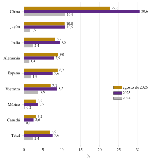
Fuente: elaboración propia a partir de USAFacts (2026), con datos de la Oficina del Censo de Estados Unidos: derechos de aduana recaudados entre el valor de las importaciones de bienes.
El resultado: el déficit de bienes de Estados Unidos con China bajó a 203.000 millones de dólares en 2025, un 31,8 % menos que en 2024.
Lo que dice la teoría: es la guerra arancelaria de Johnson con 2 países grandes (gráfico 12), y la evidencia de 2018-2019 dice que los aranceles los pagaron sobre todo los compradores de cada país (III.2).
F. Anexo: preguntas de test
Preguntas tipo test del primer ejercicio: simulador de test.
Bibliografía
También existen los aranceles a la exportación, impuestos sobre las mercancías que salen del país, con objetivos propios: asegurar el abastecimiento interior, fomentar que la mercancía se transforme en el país o recaudar (II.3). Los aranceles de tránsito, que gravan las mercancías que solo atraviesan un territorio, los prohíbe hoy el artículo V del GATT [ver tema 3.B.33].↩︎
Aunque el precio relativo de \(Y\) suba, no es seguro que se consuma menos \(Y\) y más \(X\): depende de los efectos sustitución (ES) y renta (ER), que suman el efecto total (ET) sobre la cantidad demandada de \(Y\) cuando sube su precio [ver tema 3.A.8]:
ES ER ET Bien normal \(-\) \(-\) \(-\) Bien inferior, ordinario \(-\) \(+\) \(-\) Bien de Giffen \(-\) \(+\) \(+\)
El consumo de \(Y\) baja seguro si \(Y\) es normal, porque los 2 efectos van en el mismo sentido; si es inferior, el efecto renta va en contra, y solo si domina (Giffen) sube. Si sube el precio relativo de \(Y\), baja el de \(X\), y el razonamiento es el mismo. Lo que sí es seguro es que \(C'\) está en una curva de indiferencia más baja.↩︎Con los 2 factores móviles entre sectores, la producción de \(Y\) se hace más rentable y atrae trabajo y capital. Sube la retribución real del factor que \(Y\) usa intensivamente y baja la del otro. Como, según Heckscher-Ohlin, un país importa los bienes intensivos en su factor relativamente escaso, el arancel mejora la retribución de ese factor escaso [ver tema 3.B.5].↩︎
Las CIC de \(B\) son la imagen especular de las de \(A\): el bienestar de \(B\) aumenta cuanto más lejos están del eje de ordenadas.↩︎
Un ejemplo son las cuotas textiles del Acuerdo Multifibras, que limitaban las exportaciones de muchos países en desarrollo a Estados Unidos, Canadá y Europa. En 1995 lo sustituyó el Acuerdo sobre los Textiles y el Vestido, que integró el sector en el GATT en 10 años y eliminó las cuotas que quedaban el 1 de enero de 2005 [ver tema 3.B.33].↩︎
La equivalencia se da tanto en equilibrio parcial como en equilibrio general.↩︎
El embargo de Estados Unidos a Cuba empezó en octubre de 1960 con las exportaciones (salvo alimentos y medicinas), en respuesta a las expropiaciones de empresas y propiedades estadounidenses del gobierno de Castro, y se extendió a todo el comercio con la Proclamación 3447 de 1962; la Ley Helms-Burton de 1996 lo convirtió en ley. Hoy no prohíbe el comercio de alimentos, medicinas y suministros humanitarios. Tras el deshielo de 2014, se ha vuelto a endurecer, la última vez en junio de 2025.↩︎
Sin aranceles, el valor añadido por unidad es \(V=p_j\left(1-\sum_i a_{ij}\right)\). Con un arancel \(t_j\) sobre el producto y \(t_i\) sobre los insumos, \(V'=p_j(1+t_j)-\sum_i a_{ij}\,p_j(1+t_i)\). La protección efectiva es \(z_j=(V'-V)/V\), que da (4). Para calcularla en la práctica se usan las tablas input-output [ver tema 3.A.31].↩︎
Las ecuaciones de gravedad nacieron como relaciones empíricas sin un modelo detrás, pero desde Eaton y Kortum (2002) se sabe que se pueden derivar de modelos con fundamentos microeconómicos.↩︎
Miden el cambio de bienestar como la variación porcentual del consumo real, que es la variación equivalente del cambio de política. Para España, los CGE estiman ganancias de PIB y de bienestar del mercado único, con pérdidas de empleo en algunos sectores; la gravedad, que la rebaja arancelaria con la Comunidad Europea aumentó más las importaciones que las exportaciones, y los nuevos modelos, que más apertura daría a España ganancias netas [ver tema 3.B.10].↩︎
La FPP puede ser cóncava, lineal o convexa: con rendimientos decrecientes a escala es estrictamente cóncava; con rendimientos constantes, estrictamente cóncava salvo que las intensidades factoriales de los 2 sectores sean iguales, en cuyo caso es una recta; con rendimientos crecientes puede ser convexa [ver tema 3.B.6].↩︎
Aunque suba el precio relativo de \(X\), no es seguro que se consuma menos \(X\) y más \(Y\): depende de los efectos sustitución y renta. Lo único seguro es que el nuevo consumo está en una curva de indiferencia más alta.↩︎
Para ver. Cómo se construye la curva de oferta neta, animado, en «Animation on How to Offer Curves International Economics Class» (Economicsfun, YouTube).↩︎
En ese tramo, hasta \(x(p^W(1+t))\) su ingreso marginal es \(p^W(1+t)\), mayor que su CMg, porque \(x(p^W(1+t))\leq q^c\); a partir de ahí, su ingreso marginal es el de la demanda, menor que el CMg, porque \(x(p^W(1+t))>q^M\).↩︎